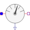

FlowSensorPartial model of flow sensor |

|
Information
This information is part of the Modelica Standard Library maintained by the Modelica Association.
Partial model for a flow sensor (mass flow/heat flow).
Pressure, mass flow, temperature and enthalpy flow of medium are not affected, but mixing rule is applied.
Parameters (5)
| medium |
Value: FluidHeatFlow.Media.Medium() Type: Medium Description: Medium in the component |
|---|---|
| m |
Value: 0 Type: Mass (kg) Description: Mass of medium |
| T0 |
Value: 293.15 Type: Temperature (K) Description: Initial temperature of medium |
| T0fixed |
Value: false Type: Boolean Description: Initial temperature guess value or fixed |
| tapT |
Value: 1 Type: Real Description: Defines temperature of heatPort between inlet and outlet temperature |
Outputs (4)
| T |
Type: Temperature (K) Description: Outlet temperature of medium |
|---|---|
| T_a |
Type: Temperature (K) Description: Temperature at flowPort_a |
| T_b |
Type: Temperature (K) Description: Temperature at flowPort_b |
| dT |
Type: TemperatureDifference (K) Description: Temperature increase of coolant in flow direction |
Connectors (3)
| flowPort_a |
Type: FlowPort_a |
|
|---|---|---|
| flowPort_b |
Type: FlowPort_b |
|
| y |
Type: RealOutput |
Components (1)
| medium |
Type: Medium Description: Medium in the component |
|---|
Extended by (3)
|
Modelica.Thermal.FluidHeatFlow.Sensors Enthalpy flow sensor |
|
|
Modelica.Thermal.FluidHeatFlow.Sensors Volume flow sensor |
|
|
Modelica.Thermal.FluidHeatFlow.Sensors Mass flow sensor |